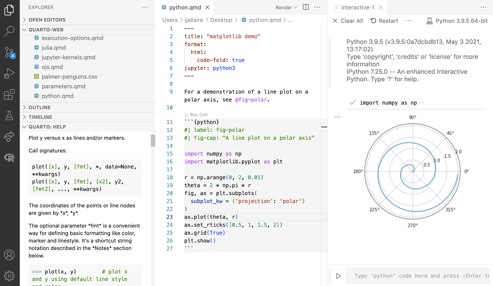
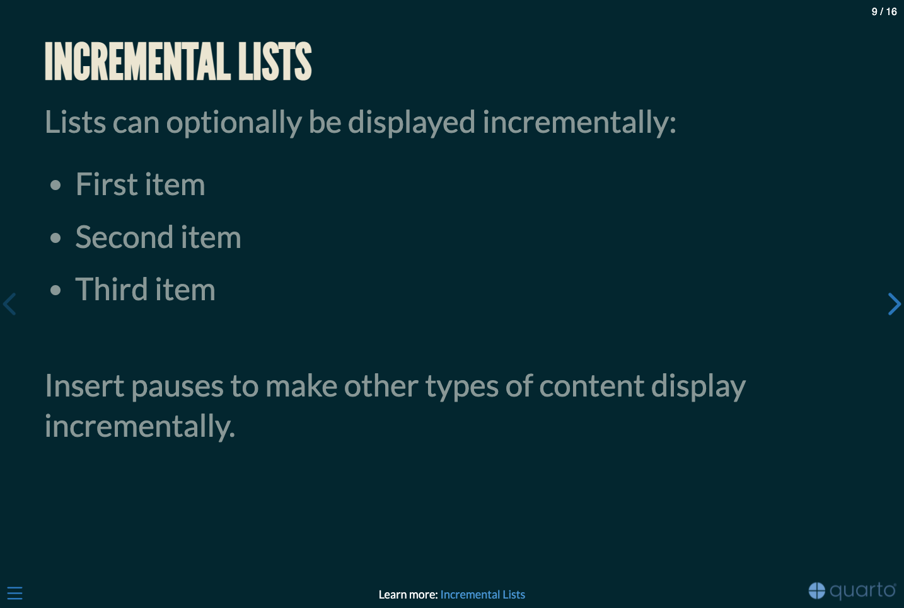

大数据时代教学、科研、出版的新范式
以数据分析为中心的全场景生态建设探索
2024-11-18
自我介绍 — 教材
- 国内第一本R语言教材
- 第二版(2023)有大幅更新
- 可靠性统计教材

- 贝叶斯统计教材
- 新版即将完成
三大开源语比较: R, Python, Julia

图 1: 编程语言性能比较(相对于C=1.0)
Donald Knuth (高德纳)
\TeX的鼻祖
美国科学院院士, 美国工程院院士, 英国、法国、挪威和德国科学院的外籍院士. 斯坦福大学荣誉退休教授
通常写作与编程是分离的，整个过程会涉及大量繁琐的复制和粘贴
观点: 文章应该是由文本与代码(chunks)组成的流构成
- 代码对结果(图、表格等)格式化
- 文本解释所发生的
- 两者编织(knitr)形成人与机器可读的文章

Hardley Wickham


Hardley Wickham: packages created

Guido van Rossum
- Python 之父，见他的故事
- 荷兰程序员，曾供职于google，现任职于dropbox
- 1982年，在阿姆斯特丹大学获得数学和计算机科学硕士学位
- 2001年度自由软件进步奖
- 2006年，ACM认定为著名工程师
- 1989年12月， 为了打发圣诞节的空余时间，编写一个以ABC语言作为基础的电脑程式语言，并以Python命名
- Python 亦为称为「胶水语言」（glue language），因为它提供了丰富的API和工具

- 2016年, 在语言编程排行中，Python升至第五名
- 2017年, Python首次超越R成为数据分析、数据科学和机器学习领域的No.1

Wes McKinney
- 成就Python在AI中的地位, 见主页
- 毕业于MIT，杜克大学的数学和统计学两个博士学位
- 曾供职于Ursa Labs, Cloudera, DataPad, AQR等公司
- Pandas的创建者, 并借助AI的风力，青云直上
- Apache Arrow的创建者，是跨语言共享科学数据主要格式

- 著有数据科学领域的畅销书Python for Data Analysis, 3E (2022)
文学化编程的践行者
- 谢益辉: 2009年 John M. Chambers奖获得者
- knitr, animation, bookdown, blogdown, pagedown, xaringan, tinytex 等R包的作者
- 自我评价: 随机漫步十八年的傻瓜


Rstudio介绍
开源免费，优秀的代码编辑器
可成倍成倍提高数据分析的效率
最好的跨平台IDE
集成多个R/Quarto Markdown文档类型/模板
Visual 与 Source 两种编辑模式自由切换

VS Code介绍
开源免费，优秀的跨平台IDE
可.red[成倍成倍]提高编程的效率
优秀的跨平台TeX/R/Python/… IDE
海量的插件
灵活方便的个性化定制
Visual 与 Source 两种编辑模式自由切换

调用 quarto: Rstudio/Jupyter nootbook/VS Code) 上运行



基于Quarto的文学化统计编程流程

图 7: Quarto 文学化统计编程流程
面板(Tabsets) — R 代码

| mpg | cyl | disp | hp | drat | wt | qsec | vs | am | gear | carb | |
|---|---|---|---|---|---|---|---|---|---|---|---|
| Mazda RX4 | 21.0 | 6 | 160.0 | 110 | 3.90 | 2.620 | 16.46 | 0 | 1 | 4 | 4 |
| Mazda RX4 Wag | 21.0 | 6 | 160.0 | 110 | 3.90 | 2.875 | 17.02 | 0 | 1 | 4 | 4 |
| Datsun 710 | 22.8 | 4 | 108.0 | 93 | 3.85 | 2.320 | 18.61 | 1 | 1 | 4 | 1 |
| Hornet 4 Drive | 21.4 | 6 | 258.0 | 110 | 3.08 | 3.215 | 19.44 | 1 | 0 | 3 | 1 |
| Hornet Sportabout | 18.7 | 8 | 360.0 | 175 | 3.15 | 3.440 | 17.02 | 0 | 0 | 3 | 2 |
| Valiant | 18.1 | 6 | 225.0 | 105 | 2.76 | 3.460 | 20.22 | 1 | 0 | 3 | 1 |
| Duster 360 | 14.3 | 8 | 360.0 | 245 | 3.21 | 3.570 | 15.84 | 0 | 0 | 3 | 4 |
| Merc 240D | 24.4 | 4 | 146.7 | 62 | 3.69 | 3.190 | 20.00 | 1 | 0 | 4 | 2 |
| Merc 230 | 22.8 | 4 | 140.8 | 95 | 3.92 | 3.150 | 22.90 | 1 | 0 | 4 | 2 |
| Merc 280 | 19.2 | 6 | 167.6 | 123 | 3.92 | 3.440 | 18.30 | 1 | 0 | 4 | 4 |
| Merc 280C | 17.8 | 6 | 167.6 | 123 | 3.92 | 3.440 | 18.90 | 1 | 0 | 4 | 4 |
| Merc 450SE | 16.4 | 8 | 275.8 | 180 | 3.07 | 4.070 | 17.40 | 0 | 0 | 3 | 3 |
| Merc 450SL | 17.3 | 8 | 275.8 | 180 | 3.07 | 3.730 | 17.60 | 0 | 0 | 3 | 3 |
| Merc 450SLC | 15.2 | 8 | 275.8 | 180 | 3.07 | 3.780 | 18.00 | 0 | 0 | 3 | 3 |
| Cadillac Fleetwood | 10.4 | 8 | 472.0 | 205 | 2.93 | 5.250 | 17.98 | 0 | 0 | 3 | 4 |
| Lincoln Continental | 10.4 | 8 | 460.0 | 215 | 3.00 | 5.424 | 17.82 | 0 | 0 | 3 | 4 |
| Chrysler Imperial | 14.7 | 8 | 440.0 | 230 | 3.23 | 5.345 | 17.42 | 0 | 0 | 3 | 4 |
| Fiat 128 | 32.4 | 4 | 78.7 | 66 | 4.08 | 2.200 | 19.47 | 1 | 1 | 4 | 1 |
| Honda Civic | 30.4 | 4 | 75.7 | 52 | 4.93 | 1.615 | 18.52 | 1 | 1 | 4 | 2 |
| Toyota Corolla | 33.9 | 4 | 71.1 | 65 | 4.22 | 1.835 | 19.90 | 1 | 1 | 4 | 1 |
| Toyota Corona | 21.5 | 4 | 120.1 | 97 | 3.70 | 2.465 | 20.01 | 1 | 0 | 3 | 1 |
| Dodge Challenger | 15.5 | 8 | 318.0 | 150 | 2.76 | 3.520 | 16.87 | 0 | 0 | 3 | 2 |
| AMC Javelin | 15.2 | 8 | 304.0 | 150 | 3.15 | 3.435 | 17.30 | 0 | 0 | 3 | 2 |
| Camaro Z28 | 13.3 | 8 | 350.0 | 245 | 3.73 | 3.840 | 15.41 | 0 | 0 | 3 | 4 |
| Pontiac Firebird | 19.2 | 8 | 400.0 | 175 | 3.08 | 3.845 | 17.05 | 0 | 0 | 3 | 2 |
| Fiat X1-9 | 27.3 | 4 | 79.0 | 66 | 4.08 | 1.935 | 18.90 | 1 | 1 | 4 | 1 |
| Porsche 914-2 | 26.0 | 4 | 120.3 | 91 | 4.43 | 2.140 | 16.70 | 0 | 1 | 5 | 2 |
| Lotus Europa | 30.4 | 4 | 95.1 | 113 | 3.77 | 1.513 | 16.90 | 1 | 1 | 5 | 2 |
| Ford Pantera L | 15.8 | 8 | 351.0 | 264 | 4.22 | 3.170 | 14.50 | 0 | 1 | 5 | 4 |
| Ferrari Dino | 19.7 | 6 | 145.0 | 175 | 3.62 | 2.770 | 15.50 | 0 | 1 | 5 | 6 |
| Maserati Bora | 15.0 | 8 | 301.0 | 335 | 3.54 | 3.570 | 14.60 | 0 | 1 | 5 | 8 |
| Volvo 142E | 21.4 | 4 | 121.0 | 109 | 4.11 | 2.780 | 18.60 | 1 | 1 | 4 | 2 |
交互呈现示例 — Shiny


更换页面主题 (Themes)
Quarto提供10个内嵌的页面更换主题 (也可 自建合适的页面)


轻松导航
- 快速跳转到演示文稿的其他部分

使用菜单按钮（幻灯片左下角）切换幻灯片菜单，以访问其他幻灯片和演示工具
- 您也可以按
m键来打开和关闭菜单
黑板(chalkboard)

使用幻灯片左下角的黑板(chalkboard)按钮来切换黑板的显示, 也可使用按钮b来切换黑板

使用幻灯片左下角的笔记画布(notes canvas)按钮来切换在当前幻灯片上的绘图功能， 也可使用按钮c来切换笔记画布
概览模式
按 o 键切换到概览模式：

按住 Alt 键（或在Macbook中按 Ctrl 键），然后点击放大对应的幻灯片
演讲者视图
按 s 键（或使用演示菜单）打开演讲者视图